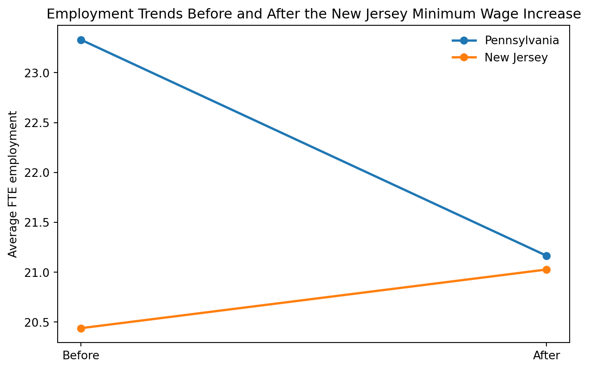

Show code
import numpy as np
import pandas as pd
import matplotlib.pyplot as plt
import statsmodels.api as sm
from scipy import stats
pd.set_option("display.max_columns", 100)
pd.set_option("display.float_format", lambda x: f"{x:,.3f}")Minimum Wages and Employment: A Case Study of the Fast-Food Industry in New Jersey and Pennsylvania
Divij Chokhani
April 22, 2026
Minimum Wages and Employment: A Case Study of the Fast-Food Industry in New Jersey and Pennsylvania
What happens when the minimum wage increases? Standard economic theory predicts that higher wages should reduce employment. Card and Krueger’s famous 1994 study asks whether that prediction actually holds in a real labor market.
This post replicates three of the paper’s central results using the original public data:
I also add a visualization to make the research design easier to interpret.
On April 1, 1992, New Jersey raised its minimum wage from $4.25 to $5.05 per hour. Nearby Pennsylvania did not. Card and Krueger use this policy difference to study whether a higher minimum wage reduced employment in the fast-food industry. Their setting is unusually persuasive because the treatment and comparison groups operate in the same industry, in neighboring states, over the same time period.
The key causal question is simple:
Did the New Jersey minimum wage increase reduce employment at fast-food restaurants?
A raw before-and-after comparison in New Jersey would not answer that question, because employment could have changed for many other reasons during 1992. The paper instead compares the change in employment in New Jersey to the change in Pennsylvania. That is the core logic of a difference-in-differences design.
The public dataset contains information on 410 Burger King, KFC, Roy Rogers, and Wendy’s restaurants in New Jersey and eastern Pennsylvania. Each store was surveyed twice:
The dataset includes employment, starting wages, hours, prices, and other store characteristics. Following the paper, I measure employment as full-time-equivalent employment (FTE):
\[ FTE = \text{full-time employees} + \text{managers} + 0.5 \times \text{part-time employees} \]
# Fixed-width layout from the codebook
colspecs = [
(0,3),(4,5),(6,7),(8,9),(10,11),(12,13),(14,15),(16,17),(18,19),(20,21),
(22,24),(25,30),(31,36),(37,42),(43,48),(49,54),(55,60),(61,62),(63,68),(69,70),
(71,76),(77,82),(83,88),(89,94),(95,100),(101,103),(104,106),(107,108),(109,110),
(111,117),(118,120),(121,126),(127,132),(133,138),(139,144),(145,150),(151,156),
(157,158),(159,160),(161,166),(167,172),(173,178),(179,184),(185,190),(191,193),(194,196)
]
columns = [
"sheet","chain","co_owned","state","southj","centralj","northj","pa1","pa2","shore",
"ncalls","empft","emppt","nmgrs","wage_st","inctime","firstinc","bonus","pctaff","meals",
"open","hrsopen","psoda","pfry","pentree","nregs","nregs11","type2","status2","date2",
"ncalls2","empft2","emppt2","nmgrs2","wage_st2","inctime2","firstin2","special2","meals2",
"open2r","hrsopen2","psoda2","pfry2","pentree2","nregs2","nregs112"
]
df = pd.read_fwf("data/public.dat", colspecs=colspecs, names=columns, na_values=["."])
for col in df.columns:
df[col] = pd.to_numeric(df[col], errors="coerce")# Variables used in the replication
# Permanent closures are coded as zero employment in wave 2.
# Temporary closures are treated as missing in the main specification.
df["fte"] = df["empft"] + df["nmgrs"] + 0.5 * df["emppt"]
df["fte2"] = df["empft2"] + df["nmgrs2"] + 0.5 * df["emppt2"]
df.loc[df["status2"] == 3, "fte2"] = 0
for s in [2, 4, 5]:
df.loc[df["status2"] == s, "fte2"] = np.nan
df["pct_fulltime"] = 100 * (df["nmgrs"] + df["empft"]) / df["fte"]
df["pct_fulltime2"] = 100 * (df["nmgrs2"] + df["empft2"]) / df["fte2"]
df["meal_price"] = df["psoda"] + df["pfry"] + df["pentree"]
df["meal_price2"] = df["psoda2"] + df["pfry2"] + df["pentree2"]
df["recruit_bonus"] = 100 * (df["bonus"] == 1)
df["recruit_bonus2"] = 100 * (df["special2"] == 1)
df["wage_425"] = 100 * (df["wage_st"] == 4.25)
df["wage_425_2"] = 100 * (df["wage_st2"] == 4.25)
df["wage_505_2"] = 100 * (df["wage_st2"] == 5.05)
df["state_name"] = np.where(df["state"] == 1, "New Jersey", "Pennsylvania")A good replication starts with a simple question: do the data look like the paper says they should? Table 2 compares New Jersey and Pennsylvania on several key variables before and after the policy change.
def mean_se(series):
s = series.dropna()
return s.mean(), s.std(ddof=1) / np.sqrt(len(s))
def t_stat(var):
nj = df.loc[df.state == 1, var].dropna()
pa = df.loc[df.state == 0, var].dropna()
return stats.ttest_ind(nj, pa, equal_var=False).statistic
wave1_vars = {
"FTE employment": "fte",
"% full-time employees": "pct_fulltime",
"Starting wage": "wage_st",
"% at $4.25": "wage_425",
"Price of full meal": "meal_price",
"Hours open (weekday)": "hrsopen",
"Recruiting bonus": "recruit_bonus",
}
wave2_vars = {
"FTE employment": "fte2",
"% full-time employees": "pct_fulltime2",
"Starting wage": "wage_st2",
"% at $4.25": "wage_425_2",
"% at $5.05": "wage_505_2",
"Price of full meal": "meal_price2",
"Hours open (weekday)": "hrsopen2",
"Recruiting bonus": "recruit_bonus2",
}
rows = []
for label, var in wave1_vars.items():
nj_mean, _ = mean_se(df.loc[df.state == 1, var])
pa_mean, _ = mean_se(df.loc[df.state == 0, var])
rows.append(["Wave 1", label, nj_mean, pa_mean, t_stat(var)])
for label, var in wave2_vars.items():
nj_mean, _ = mean_se(df.loc[df.state == 1, var])
pa_mean, _ = mean_se(df.loc[df.state == 0, var])
rows.append(["Wave 2", label, nj_mean, pa_mean, t_stat(var)])
summary_table = pd.DataFrame(rows, columns=["Wave", "Variable", "NJ mean", "PA mean", "t statistic"])
summary_table.round(2)| Wave | Variable | NJ mean | PA mean | t statistic | |
|---|---|---|---|---|---|
| 0 | Wave 1 | FTE employment | 20.440 | 23.330 | -2.000 |
| 1 | Wave 1 | % full-time employees | 51.630 | 53.020 | -0.540 |
| 2 | Wave 1 | Starting wage | 4.610 | 4.630 | -0.400 |
| 3 | Wave 1 | % at $4.25 | 30.510 | 32.910 | -0.410 |
| 4 | Wave 1 | Price of full meal | 3.350 | 3.040 | 3.960 |
| 5 | Wave 1 | Hours open (weekday) | 14.420 | 14.530 | -0.290 |
| 6 | Wave 1 | Recruiting bonus | 23.560 | 29.110 | -0.980 |
| 7 | Wave 2 | FTE employment | 21.030 | 21.170 | -0.130 |
| 8 | Wave 2 | % full-time employees | 54.410 | 49.300 | 1.850 |
| 9 | Wave 2 | Starting wage | 5.080 | 4.620 | 10.820 |
| 10 | Wave 2 | % at $4.25 | 0.000 | 25.320 | -5.140 |
| 11 | Wave 2 | % at $5.05 | 85.500 | 1.270 | 36.380 |
| 12 | Wave 2 | Price of full meal | 3.410 | 3.030 | 5.080 |
| 13 | Wave 2 | Hours open (weekday) | 14.420 | 14.650 | -0.650 |
| 14 | Wave 2 | Recruiting bonus | 19.340 | 22.780 | -0.660 |
The broad pattern matches the paper well. Before the policy change, average employment is slightly lower in New Jersey than in Pennsylvania, while starting wages are very similar. After the policy change, the biggest divergence is exactly where it should be: starting wages rise sharply in New Jersey relative to Pennsylvania.
The treatment appears to have worked. New Jersey wages moved up after the law changed, while Pennsylvania provides a useful comparison group where wages stayed much closer to their original level.
The paper’s central estimate comes from a difference-in-differences comparison:
\[ (\text{NJ After} - \text{NJ Before}) - (\text{PA After} - \text{PA Before}) \]
This design asks whether employment changed more in the treated state than in the untreated state.
# Means by state and wave
before_means = df.groupby("state_name")["fte"].mean()
after_means = df.groupby("state_name")["fte2"].mean()
# Balanced sample for changes in employment
balanced = df[df[["fte", "fte2"]].notna().all(axis=1)].copy()
balanced["change_fte"] = balanced["fte2"] - balanced["fte"]
change_means = balanced.groupby("state_name")["change_fte"].mean()
nj_change = balanced.loc[balanced.state == 1, "change_fte"]
pa_change = balanced.loc[balanced.state == 0, "change_fte"]
did = nj_change.mean() - pa_change.mean()
did_test = stats.ttest_ind(nj_change, pa_change, equal_var=False)
results_did = pd.DataFrame({
"Before": before_means,
"After": after_means,
"Change": change_means,
})
results_did.loc["Difference (NJ - PA)"] = [
before_means["New Jersey"] - before_means["Pennsylvania"],
after_means["New Jersey"] - after_means["Pennsylvania"],
did,
]
results_did.round(3)| Before | After | Change | |
|---|---|---|---|
| state_name | |||
| New Jersey | 20.439 | 21.027 | 0.467 |
| Pennsylvania | 23.331 | 21.166 | -2.283 |
| Difference (NJ - PA) | -2.892 | -0.138 | 2.750 |
Difference-in-differences estimate: 2.750 FTE employees
t-statistic: 2.049
p-value: 0.043The replicated difference-in-differences estimate is about +2.75 FTE employees per store. Instead of falling, employment in New Jersey rises relative to Pennsylvania after the minimum wage increase.
This is the result that made the paper so influential. A simple competitive labor market model predicts that a higher minimum wage should reduce employment. In this setting, the data point in the opposite direction.
The table is informative, but a graph makes the research design easier to see. The figure below traces average employment before and after the policy change in both states.
plot_df = pd.DataFrame({
"State": ["Pennsylvania", "Pennsylvania", "New Jersey", "New Jersey"],
"Wave": ["Before", "After", "Before", "After"],
"FTE employment": [
before_means["Pennsylvania"],
after_means["Pennsylvania"],
before_means["New Jersey"],
after_means["New Jersey"],
],
})
fig, ax = plt.subplots(figsize=(8, 5))
for state in ["Pennsylvania", "New Jersey"]:
temp = plot_df[plot_df["State"] == state]
ax.plot(temp["Wave"], temp["FTE employment"], marker="o", linewidth=2, label=state)
ax.set_title("Employment Trends Before and After the New Jersey Minimum Wage Increase")
ax.set_ylabel("Average FTE employment")
ax.set_xlabel("")
ax.legend(frameon=False)
plt.show()
The plot highlights the key comparison. Pennsylvania employment falls between the two waves, while New Jersey employment stays roughly stable or increases slightly. The distance between those changes is the difference-in-differences estimate.
The same idea can be written as a regression model:
\[ \Delta Employment_i = \alpha + \beta \cdot NJ_i + \varepsilon_i \]
Here, \(NJ_i\) equals 1 for stores in New Jersey and 0 for stores in Pennsylvania. The coefficient \(\beta\) captures the difference-in-differences estimate in regression form.
# Table 4, column (i): stores with employment and wage data in both waves
reg_df = df[df[["fte", "fte2", "wage_st"]].notna().all(axis=1)].copy()
reg_df["change_fte"] = reg_df["fte2"] - reg_df["fte"]
X = sm.add_constant(reg_df["state"])
model = sm.OLS(reg_df["change_fte"], X).fit()
regression_table = pd.DataFrame({
"Coefficient": model.params,
"Std. Error": model.bse,
"t value": model.tvalues,
"p value": model.pvalues,
})
regression_table.round(3)| Coefficient | Std. Error | t value | p value | |
|---|---|---|---|---|
| const | -2.146 | 1.027 | -2.090 | 0.037 |
| state | 2.359 | 1.146 | 2.059 | 0.040 |
NJ coefficient: 2.359
Standard error: 1.146
Number of stores used: 365My estimate for the New Jersey coefficient is very close to the published result in Table 4, column (i). That is strong evidence that the replication is working as intended. Small discrepancies are normal in public-data replications because they can depend on exact missing-value rules and sample restrictions.
The strength of this paper is not just the result. It is the design. By comparing New Jersey to nearby Pennsylvania, Card and Krueger try to recover the counterfactual trend: what would have happened in New Jersey if the policy had not changed?
The key identifying assumption is parallel trends. In the absence of the minimum wage increase, employment in New Jersey would have evolved similarly to employment in eastern Pennsylvania. This assumption is not guaranteed, but it is much more credible here than in a simple before-and-after comparison because:
That does not prove the estimate is perfect. But it does make the difference-in-differences design much more convincing as a causal strategy.
This replication closely reproduces the main findings of Card and Krueger (1994). The evidence shows that:
The larger lesson is that empirical evidence can challenge simple theoretical predictions. In this case, one of the most famous studies in labor economics finds no evidence that the minimum wage increase reduced fast-food employment.